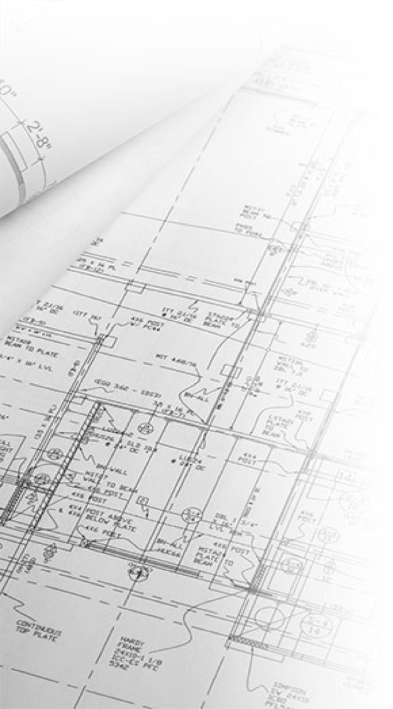

[π]ροφίλ • [υ]πηρεσίες • [ν]έα • [ε]πενδύσεις • [p]ortfolio • [σ]ύνδεσμοι • [b]log • [ε]πικοινωνία



ΥΠΗΡΕΣΙΕΣ - Πεδία εφαρμογής με εξειδίκευση και εμπειρία
Ρύθμιση Ημιυπαιθρίων χώρων βάσει του Νόμου 3843/2010
Ιστορική αναδρομή και λειτουργία του χώρου Τι σημαίνει για εσάς η “ρύθμιση”
Η έννοια του ημιυπαίθριου χώρου εμφανίστηκε πρώτη φορά στον Γενικό Οικοδομικό Κανονισμό του 1985 (ΓΟΚ '85) σε αντικατάσταση του ΓΟΚ '73 με στόχο μια καλύτερη ποιότητα δόμησης και ζωής στον αστικό κύκλο. Ήταν η πρώτη φορά που μια τέτοια έννοια εισαγάγονταν στο νομοθετικό σύστημα και θεωρείτο πραγματικά καινοτόμος. Ο επίσημος ορισμός του ημιυπαίθριου χώρου κατά τον ΓΟΚ είναι ο εξής:
-
‣ Ημιυπαίθριος χώρος είναι ο στεγασμένος χώρος του κτιρίου, του οποίου η μία τουλάχιστον πλευρά είναι ανοιχτή προς τον κοινόχρηστο χώρο ή τους ακάλυπτους χώρους του οικοπέδου που δεν προσμετρώνται στην κάλυψη και οι υπόλοιπες πλευρές του ορίζονται από τοίχους ή κατακόρυφα φέροντα ή μη στοιχεία και χρησιμοποιείται για τη μετακίνηση ή προσωρινή παραμονή ανθρώπων. (ΓΟΚ '85 Αρ. 2 παρ. 32)
Τίποτα όμως από τα παραπάνω περί ποιότητας ζωής δεν γίνεται αντιληπτό, γιατί ο νόμος ορίζει το χώρο με απλό γεωμετρικό προσδιορισμό για να μην επιδέχεται αμφισβητήσεις και παρερμηνείες. Αυτό είναι που έκανε πολλούς κατασκευαστές, αλλά και ιδιοκτήτες να εκμεταλλευτούν τον νόμο προς κέρδους τους ή τουλάχιστον έτσι νόμιζαν καθώς το “κλείσιμο” του ημιυπαιθρίου αποτελεί κατά ορισμό πολεοδομική παράβαση και ως εκ τούτου υπάρχουν κυρώσεις και πρόστιμα διατήρησης…
Πέραν των κυρώσεων όμως...
Η ερμηνεία του ημιυπαίθριου χώρου επί του “ζειν” είναι πολύ πιο περίπλοκο να περιγραφεί και να ερμηνευθεί. Τα πραγματικά προβλήματα που προκαλούνται από συσσωρευμένους παράνομα “κλεισμένους” ημιυπαίθριους χώρους είναι πολλά και σε ποικίλες κλίμακες.
-
• Ξεκινώντας από τη μικρή κλίμακα της κατοικίας ο ημιυπαίθριος χώρος -εφόσον είναι σωστά μελετημένος- λειτουργεί σαν θερμικός σταθμιστής του κτιρίου, ή αλλιώς σαν ζώνη ανάσχεσης. Αποτελεί δηλαδή έναν χώρο ανάμεσα στο εσωτερικό του κτιρίου και το εξωτερικό περιβάλλον που έχει την ικανότητα να ρυθμίζει την εσωτερική θερμοκρασία της κατοικίας. Η ιδανική θερμοκρασία διαβίωσης είναι περίπου 22 - 25°C. Αν πάρουμε για παράδειγμα μια σχετικά ζεστή μέρα του καλοκαιριού με θερμοκρασία περίπου 32°C, ένας σωστά μελετημένος ημιυπαίθριος χώρος μπορεί να έχει μέχρι και 5 βαθμούς διαφορά, δηλαδή 27°C κυρίως λόγω της σκίασης ή και της φύτευσής του ή ακόμα και της ίδιας της μορφής του που ευνοεί τις κλιματικές συνθήκες (ρεύμα αέρος). Καταλαβαίνουμε εύκολα λοιπόν ότι πλησιάζει κατά πολύ στην ιδανική θερμοκρασία διαβίωσης. Αυτό έχει ως αποτέλεσμα στις ιδανικότερες συνθήκες τη μη χρήση κλιματιστικού ή έστω την ελάχιστη χρήση αυτού.
-
• Επεκτείνοντας το συγκεκριμένο θέμα λίγο περισσότερο στο επίπεδο της γειτονιάς, η μείωση της ανάγκης για κλιματισμό μειώνει αντίστοιχα και την εξωτερική θερμοκρασία του περιβάλλοντος, εφόσον το κλιματιστικό αφενός παράγει ψύξη στη μια πλευρά (μέσα) και ζέστη στην άλλη (έξω). Μπορεί αυτό να φαίνεται σαν μικρή θερμοκρασιακή διαφορά, αλλά όλοι γνωρίζουμε πως μια αύξηση της θερμοκρασίας του περιβάλλοντος ακόμη και για έναν βαθμό μπορεί να είναι και είναι καταστροφική.
-
• Αλλάζοντας κλίμακα ξανά και προσεγγίζοντας θέματα πολεοδομικής φύσης τα προβλήματα αρχίζουν να φαίνονται ακόμα πιο έντονα. Ας πάρουμε για παράδειγμα μια περιοχή για την οποία έχει γίνει ένα πολεοδομικό σχέδιο, με καθορισμένες χρήσεις γης και όρους δόμησης. Σε κάθε πολεοδομικό σχέδιο θεωρητικά γίνεται και ένας πληθυσμιακός υπολογισμός και βάσει αυτού αναπτύσσονται και οι υποδομές. Όταν λοιπόν σε μια περιοχή η οποία έχει μελετηθεί για να στεγάσει 100.000 ανθρώπους, δηλαδή περίπου 25.000 - 30.000 διαμερίσματα, ξαφνικά με την πρόσθεση ενός ακόμη δωματίου σε κάθε διαμέρισμα (ημιυπαίθριος χώρος) ο πληθυσμός αυτός φτάνει τις 125.000 - 130.000 ανθρώπους, για τους οποίους όμως οι υποδομές δεν είναι αρκετές (σχολεία, δρόμοι, υγειονομικές υπηρεσίες, θέσεις εργασίας, ενέργεια) γίνεται εύκολα αντιληπτό πως δημιουργούνται πλέον των προηγουμένων και προβλήματα λειτουργίας της ίδιας της κοινωνίας των πολιτών της περιοχής.
Η πολιτεία σε μια προσπάθεια να “ρυθμίσει” τους χώρους αυτούς προχώρησε στην νομοθέτηση της “τακτοποίησης” των χώρων για 40 χρόνια, ώστε τουλάχιστον πρωτογενώς να μπορέσει να καταγράψει μέρος της παρανομίας και αφετέρου (ίσως και κυριότερα για πολλούς από εμάς) να χρησιμοποιήσει το μέτρο ως ένα εισπρακτικό μέτρο για να ενισχύσει τα ταμεία του κράτους και να χρησιμοποιήσει τμήμα αυτών των εσόδων για έργα υποδομής που σκοπός τους θα είναι να αναβαθμίσουν την ποιότητα ζωής περιοχών στα αστικά κέντρα που επιζητούν περισσότερο πράσινο.
Τ3 Κατασκευή και Ανάπτυξη Τουρτούρας Β. Φόρη 2 Κοζάνη 501 00
T3 Construction and Development Tourtouras V. Fori 2 Kozani 50100
Τ³ - Σύμβουλοι / Μελετητές / Επιβλέποντες / Κατασκευαστές Μηχανικοί
επίκαιρο

Μενού Επιλογών:
• [έ]ργα οδοποιίας